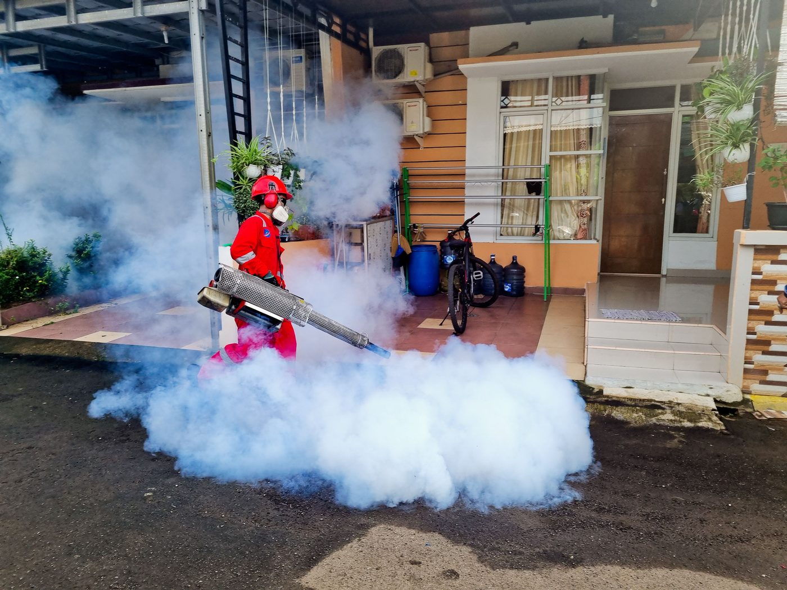
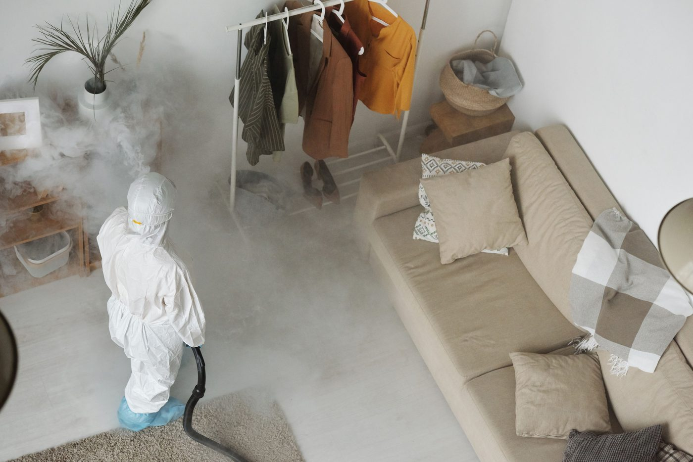

Pest control on the North Shore
Blue Star Pest Control offers pest control, termite treatment and protection plans, bed bug service, and rodent service, and has been in business since 1984.

Blue Star Pest Control sits at 1441 Shortcut Hwy Suite A in Slidell. The company offers pest control, termite treatment and protection plans, bed bug service, and rodent service, and has been in business since 1984.

1441 Shortcut Hwy Suite A, Slidell, LA 70458
Office hours Monday to Friday, 9:00 AM to 5:00 PM; closed Saturday and Sunday